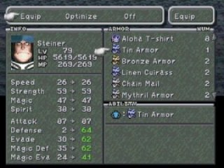
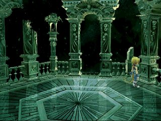
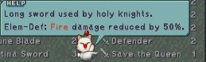

|
Rare
Item หายากในภาคนี้ มีอยู่หลายชิ้น ซึ่งบางชิ้นก็ไม่มีประโยชน์อะไรเลย
หลายชิ้น ได้มาจากการทำ Quest ซึ่งสามารถทำได้เพียงหนเดียวเท่านั้น
หากพลาดไปแล้วก็ไม่สามารถกลับมาทำได้อีก
- Tin Armor
เกราะชิ้นนี้ เป็นเกราะที่ดีที่สุด ซึ่งสามารถใส่ได้โดย Steiner เท่านั้น
สามารถได้มเมื่อปราบ Hades ได้แล้ว เขาจะสามารถสร้างอาวุธให้เราได้
(เขาจะทำตัวเป็น Synthesis Shop)
ซึ่ง Tin Armor ได้มาจากการรวมกันของ Hammer + Ore และเงินอีก 50,000 Gil
(Hammer หาได้จากการทำ Quest เหรียญ Stellazzio)

- Eidolon Wall's Secret
นั่นคือความลับของกำแพงใน Madain Sari ซึ่งสามารถทำได้ในแผ่น 4
เริ่มต้นให้มี Garnet ในกลุ่ม และเข้าไปคุยกับ Lani บริเวณระเบียงด้านล่างของบ้าน
Eiko
ออกจากหมู่บ้านแล้วกลับเข้าไปใหม่ โดยไม่ให้มี Garnet และ Amarant อยู่ในกลุ่ม
กลับไปคุยกับ Lani ที่บริเวณเดิม 2 ครั้ง แล้วไปที่ผนัง Eidolon
จากทางเข้าเดินไปทางขวา กดสำรวจทุกครั้งที่มีเครื่องหมาย ! เดินผ่านไปจนได้ยินเสียงกระดิ่ง
จากนั้นเปลี่ยนเปิดเดินกลับทางเดิม แต่วนไปทางซ้ายจนกว่าจะได้ยินเสียงกระดิ่งอีก
(สำรวจทุกจุดที่มีเครื่องหมาย ! )
เดินวนซ้ายขวาสลับกันจนครบ 9 ครั้ง จะได้ HP และ MP เพิ่มขึ้นมาจนเต็ม
แสดงว่าสำเร็จแล้ว ให้สำรวจภาพวาดต่างๆ ตามจุด ! จะพบข้อความใหม่เพิ่มขึ้นมา
ที่ภาพนึงจะพบชื่อจริงของ Garnet นั่นก็คือ... Sarah
- Excalibur
Excalibur เป็นดาบของ Steiner เมื่อสวมใส่แล้วจะสามารถเรียนรู้ Climhazzard
สามารถหาดาบนี้ได้ในแผ่น 4 โดยไปที่ Daguerreo
จะมีชายแก่ยืนอยู่ข้างห้องสมุด เขาต้องการ Magical
Fingertip
สามารถหา Magical Fingertip ได้ที่ห้องประมูลในเมือง Treno
หากไม่มี Magical Fingertip ออกมาให้ประมูล ให้ขาย key item บางชิ้นออกไปก่อน
เช่น
Doga's Artifact, Rat Tail, Griffin's Heart, และ Une's Mirror
โดยขายสิ่งของดังกล่าวกับผู้คน ดังนี้
Doga's Artifact ขายให้กับ Scholar ในร้านตีอาวุธ
ในราคา 10,000 Gil
Rat Tail ขายให้กับ Adventurer บริเวณร้านกาแฟ
ในราคา 25,000 Gil
Griffin's Heart ขายให้กับ Adventurer บริเวณร้านกาแฟ
ในราคา 10,000 Gil
Une's Mirror ขายให้กับ Nobleman บริเวณร้านกาแฟ
ในราคา 15,000 Gil
หรือหากยังไม่ได้ซื้อ ก็ให้ซื้อแล้วก็ขายออกให้หมด
เมื่อสามารถประมูล Magical Fingertip ได้แล้ว
ให้นำกลับไปให้ชายแก่ที่ Daguerreo จะได้ดาบ Excalibur มา
- ExcaliburII
เป็นดาบที่มีความรุนแรงที่สุดของ Steiner วิธีได้ดาบเล่มนี้ง่ายมาก
ไม่ต้องทำ Quest ด้วยซ้ำ เพียงไปให้ถึงระเบียงใน Memoria ภายในเวลา 12 ชั่วโมง
ก็จะพบกับดาบ ExcaliburII บนระเบียงมุมด้านขวา
(ระเบียงที่มีที่ Save ก่อนที่จะเข้าไปในห้องที่เป็นอวกาศ ไม่มีทางเดิน ก่อนถึงห้อง
Crytal ที่ศัตรูไม่ให้ Exp)

- Save the Queen

ดาบเล่มนี้เป็นอาวุธของ Betrix ซึ่งพวกเราไม่มีใครสามารถใช้ได้ เป็นเพียงของสะสม
สามารถได้มาโดยการสร้างของ Hades โดยใช้ส่วนผสม
ดังนี้
Save the Queen ต้องใช้ Javelin + Silver Gloves และเงินอีก 50,000 Gil
- Mr Morrid's Coffee
บริเวณหมู่บ้าน Dali จะมีชายแก่ชื่อ Morrid เขากำลังหากาแฟ 3 ชนิดอยู่ หากหาให้เขาได้จะได้
item
Moccha Coffee เก็บที่ South Gate ใกล้กับป่า
Chocobo
Kirman Coffee บริเวณโต๊ะระเบียงหลังบ้านของ
Eiko ที่ Madain Sari เก็บได้หลังจากเก็บโต๊ะอาหาร
Burman Coffee จะเก็บได้เพียงแค่หนเดียวเท่านั้น
คือในระหว่างที่มีการ จัดการแข่งขัน Card ให้ไปที่ South Gate เพื่อผ่านไป
ที่หมู่บ้าน Dali
ในระหว่างนี้ Mayor จะไม่อยู่บ้าน ให้สำรวจในบ้านเขาเพื่อหากุญแจ
เริ่มค้นหาที่โต๊ะก่อน เลือก "Desk " จะพบ Mini-Brahne
สำรวจที่โต๊ะหลายๆ เลือก Desk หลายๆ ครั้งจนกว่าเด็กจะหลับ "Zzzz"
สำรวจที่เครื่องทำความร้อน เลือก "Heater" จะได้ Mayor's Key
เปิดประตูที่กังหันลมโดยใช้ Mayor's Key
เปิดคอก Chocobo ไปด้านขวา มีหีบเก็บเงิน 30,000 Gil สำรวจซ้ำอีกครั้งจะได้
Burman Coffee
กลับไปที่ Observatory Mountain มอบกาแฟทั้งสามให้กับ Morrid เขาจะส่ง Mini-Prima
Vista ไปให้
เมื่อกลับไปที่ Lindblum ให้กลับไปที่ซ่อนของกลุ่ม Tantalus จะพบมันวางอยู่ตรงพื้นใกล้กับเตียง
|